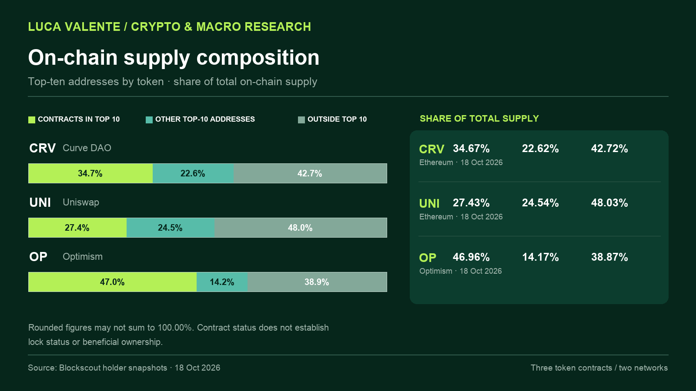
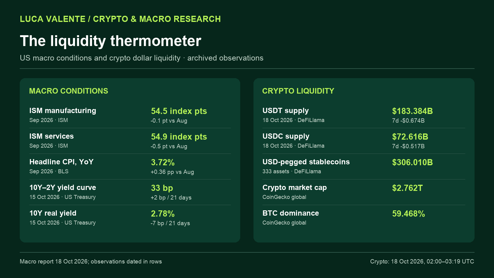
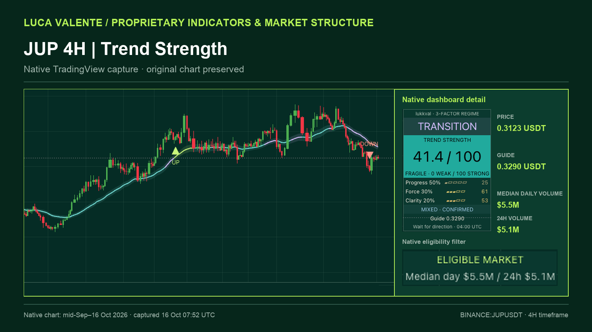

On-chain research · Published 18 Oct 2026

Token Supply Concentration: What Top-10 Holder Lists Reveal—and What They Miss
CRV, UNI and OP holder concentration, with a closer look at contracts, exchanges and burned supply.
Three research case studies published 18 October 2026. Each article pairs a source-dated chart with the reasoning behind it.
On-chain research · Published 18 Oct 2026

CRV, UNI and OP holder concentration, with a closer look at contracts, exchanges and burned supply.
Macro and liquidity · Published 18 Oct 2026

US macro conditions alongside the latest USDT and USDC supply observations.
Market structure · Published 18 Oct 2026 · Chart captured 16 Oct 2026

A JUP four-hour case study using a native TradingView capture and a three-part trend reading.